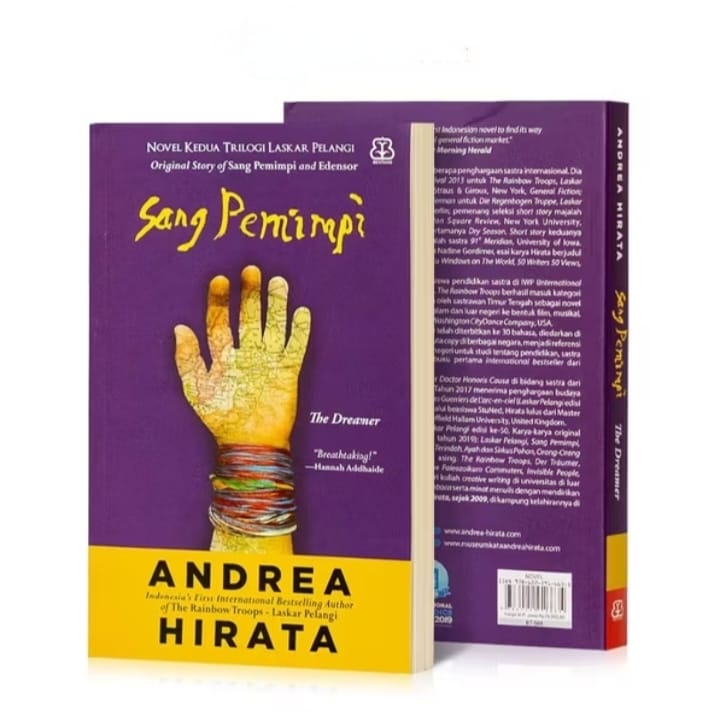
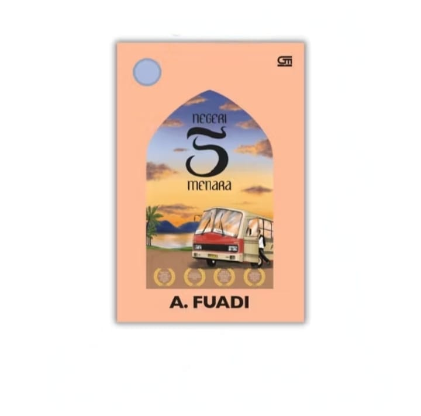
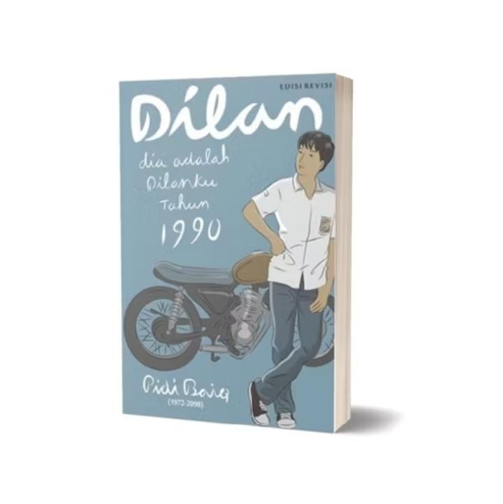
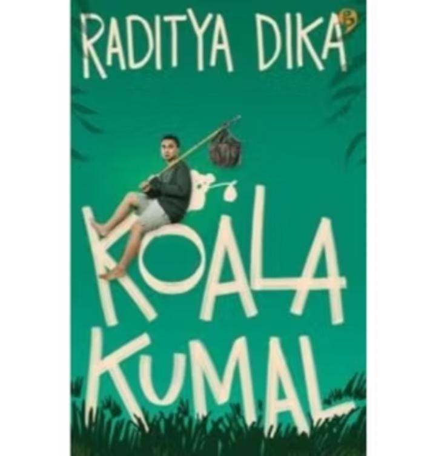

| Gambar Buku | Detail Buku | Kutipan Buku |
 |
Judul :Sang Pemimpi Penulis :Andrea Hirata Penerbit :Bentang Pustaka Tahun Terbit :2006 |
“Mimpi adalah barang gratis. Semua orang boleh punya mimpi, sebanyak apa pun yang diinginkan.” |
 |
Judul :Negri 5 menara Penulis :A. Fuadi Penerbit :Gramedia Pustaka Utama Tahun Terbit :2009 |
"Man Jadda Wajada. Siapa yang bersungguh-sungguh, pasti akan berhasil." |
 |
Judul :Dia adalah Dilanku 1990 Penulis :Pidi Baiq Penerbit :Pastel Books (Mizan) Tahun Terbit :2014 |
“Cinta sejati adalah kenyamanan, kepercayaan, dan dukungan. Kalau kamu tidak setuju, aku tidak peduli.” |
 |
Judul :Koala Kumal Penulis :Raditya Dika Penerbit :Gramedia Pustaka Utama Tahun Terbit:2015 |
“Kadang hidup itu seperti koala. Kelihatan lucu dari luar, tapi sebenarnya sedang berusaha keras bertahan di atas pohon.” |
| Judul :Filosofi Teras Penulis :Henry Manampiring Penerbit :Gramedia Pustaka Utama Tahun Terbit :2020 |
“Manusia tidak memiliki kuasa untuk memiliki apapun yang dia mau, tetapi dia memiliki kuasa untuk tidak mengingini apa yang dia belum miliki, dan dengan gembira memaksimalkan apa yang dia terima.” |